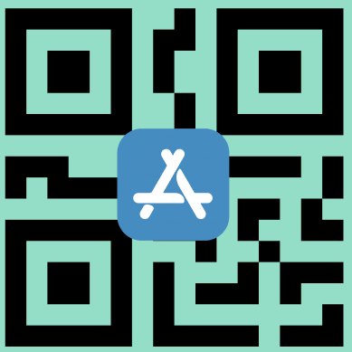

Imagina una aplicación que, con solo una foto, clasifica automáticamente tus apuntes según el horario de tus clases.
Captura, organiza y revisa tus notas de cada curso fácilmente.
¡Libérate del desorden y accede a tus fotos cuando más lo necesites!
En la era digital, los dispositivos móviles se han convertido en aliados indispensables en el aprendizaje. Pero junto con su uso surge un reto: gestionar eficazmente la gran cantidad de información visual que los estudiantes recopilan en clase.
Nuestra aplicación facilita este proceso al organizar automáticamente tus fotos según tu horario escolar.
¡Conviértete en un estudiante más organizado, sin esfuerzo y con todo al alcance de tu mano con DiaLearn!.
Descubre los beneficios que hacen de DiaLearn la mejor herramienta para organizar tu aprendizaje
Nuestra IA clasifica automáticamente tus apuntes según tu horario académico. Sin esfuerzo manual, todos tus materiales estarán perfectamente organizados por asignatura y fecha.
Transforma tus fotos de apuntes en material de estudio estructurado y fácil de revisar. La IA genera resúmenes, esquemas y contenido optimizado para tu aprendizaje.
Encuentra tus apuntes al instante. Sistema de búsqueda inteligente que te permite localizar cualquier contenido por materia, fecha o tema específico en segundos.
Tras usar Diallearn en un par de sesiones de clases puedo notar una mejora en mi eficiencia para aprender. El material generado por mis notas resumen perfectamente lo que debo aprender
Excelente aplicación! No tengo que hacer muchos pasos para poder subir mi material capturado en clases y organizarlo. Y el nuevo material resumido es una locura!
Lo que me encanta de esta app es que adapta el material a un entorno en el que me facilita mi aprendizaje. Es una locura
DiaLearn ha revolucionado mi forma de estudiar. Ya no pierdo tiempo organizando mis apuntes manualmente. La IA es increíblemente precisa y me ayuda a enfocarme en lo que realmente importa.
Como estudiante de ingeniería, tengo muchas materias complicadas. Esta app me permite tener todo organizado automáticamente por horarios. ¡Es genial para repasar antes de los exámenes!
Increíble cómo la inteligencia artificial puede transformar mis fotos de clase en material de estudio estructurado. Definitivamente recomiendo DiaLearn a todos mis compañeros.
